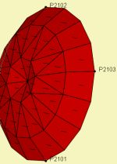

| Identifier | Direction= | |
| Dimension | 3D only | |
| Format | See parameter Position= | |
| Purpose | Direction of motion of a group of driving elements | |
| Used in | Driving | |
| See also | DirIsAxial= | |
Direction= is used to align the motion of driving elements if specified via section Driving. By default motion is assumed to be normal to each vibrating boundary element.
Note, the motion of boundary elements, which are generated with the help of section Diaphragm are automatically aligned to the device-axis, and thus don't need the parameter Directions=.
Direction= is used for Dim=3D only. The specification is identical to parameter Position=. For Dim=CircSym use DirIsAxial=, instead. In order to see indicators check Driving Direction of the View-Page.
 |
|
|
| Aligned | Normal | View Page |
For example
Driving
RefElements="Diaphragm"
DrvGroup=1001
Direction=2102,2101,2103 RefNodes=N
In this example a directional triangle is formed. Its normal indicates the direction of motion.